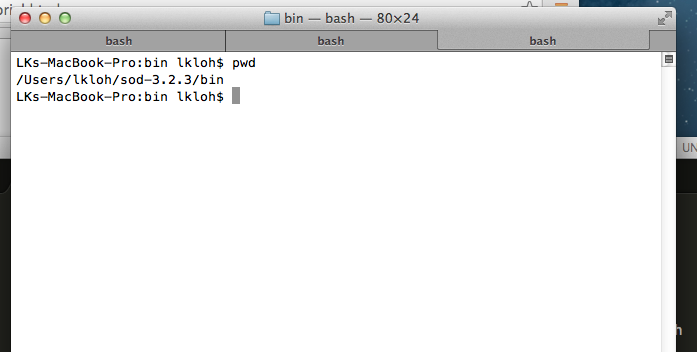

Standing Order for Data (SOD)¶
Installing SOD¶
First, download SOD.
Once you have gotten the folder for SOD, put it somewhere where you won’t touch it too much. What I did was put the SOD folder in my home directory, though other places are acceptable as well, as long as its not too easy to delete it by accident.

Once you have it there, get the path to the sod folder’s bin and put it in your path folder.
Inside my home directory’s bash profile (you get the by typing cd), you put the path to sod-3.2.3/bin by adding in either the bash or bash_profile or profile files:
Downloading Data with SOD¶
| Authors: | Trevor Bollmann |
|---|
- Create a sod recipe and place it in the folder that you would like the data to download to.
- sod -f <recipename>.xml
- Run verb”sodcut.sh” to cut the seismogram around phase wanted
- check model within cutevseis.sh
- run using sodcut.sh <name>
- watch sdir = processed seismograms
- Run over the entire downloaded directory (the files sod downloaded)
- Run sodpkl.sh (converts .sac files to python pickles)
- run using sodpkl.sh [options] <directory>
- output will automatically be zipped
- run in DATA directory
- Run ttpick.py (does travel time picking with plotting)
- can use iccs.py but it does not have plotting capabilities
- run using ttpick.py [options] <pkl.gz file>
- do this one event at a time
- use sacp2 to look at the stacking of the seismograms
- you can sort the seismograms using the –s flag
- run getsta.py (creates a loc.sta file)
- getsta.py [options] <pkl.gz files>
- Run EITHER of these:
FIRST CHOICE
run mccc2delay.py (converts mccc delays to actual delays) by doing mccc2delay.py [option] <.mcp files>
- run getdelay.py (creates a delay file) by doing getdelay.py [options] <*.px>
- Can possibly use doplotsta.sh, plots all of the events and their station delays
Run evmcdelay.sh
- SECOND CHOICE
- verb”ttcheck.py” to compare the delay times of the p and s waves. Should form a nice cloud with the mean value in line with the cloud.
- If you need to remove a station from an event you can use verb”pklsel.py”
- Run using verb”pklsel.py [pkl file] –d [stnm]” to remove one station
- Only works for one event at a time
- If you need to filter the data to be able to pick use verb”evsacbp.sh”
- run using verb”evsacbp.sh [pkl file] bp1 bp2”
- Automatically uses two corners
- run in the whole downloaded directory (the one with the sac directory)